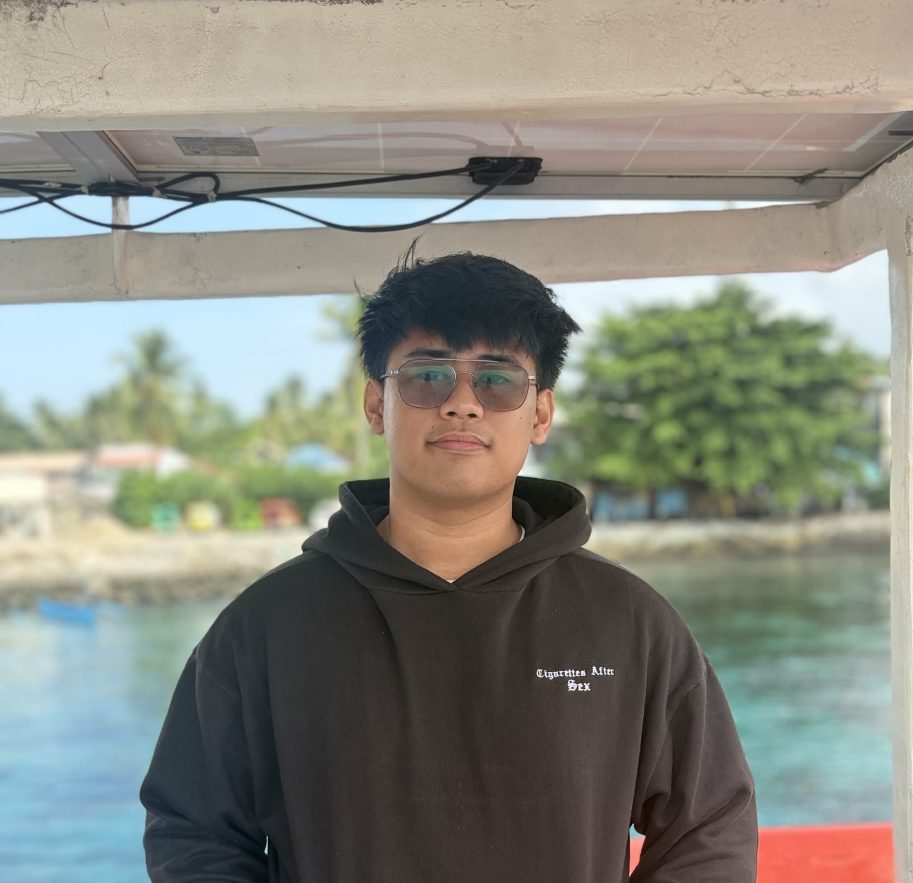

Frontend
- HTML5
- CSS3
- JavaScript
- Responsive Design
Student Developer
I’m Jebron Ortula, a computer science student focused on front-end engineering, accessible design, and practical problem-solving.

About
I am a motivated student developer who enjoys turning complex ideas into simple, accessible experiences. My work blends technical problem-solving with visual design, helping me create products that are both functional and easy to use.
Through coursework, personal projects, and internships, I have developed a strong foundation in web development, user experience, and collaborative teamwork.
Skills
Projects
Served as one of the frontend developers for the VERIS website, contributing to the design and implementation of user-friendly interfaces and responsive layouts.
View projectA web application designed to streamline the auditing process for organizations, featuring user-friendly interfaces, data visualization, and secure access controls.
Not published yetA mobile application that helps users locate nearby medical facilities, providing essential information and navigation features for improved healthcare access.
View projectEducation
Visayas State University
Faculty of Computing
Western Leyte College
High School Department
Achievements
Received recognition for academic excellence and potential in computer science.
Part of the VERIS development team. Dedicated in creating solutions for real-world problems.
Supported first-year students learning basic programming concepts.
Recognized for outstanding performance in data science and analytics.
Created a solution for a real-world problem using data analysis and machine learning techniques.
Led initiatives to promote student engagement and academic excellence in the Computer Science department.